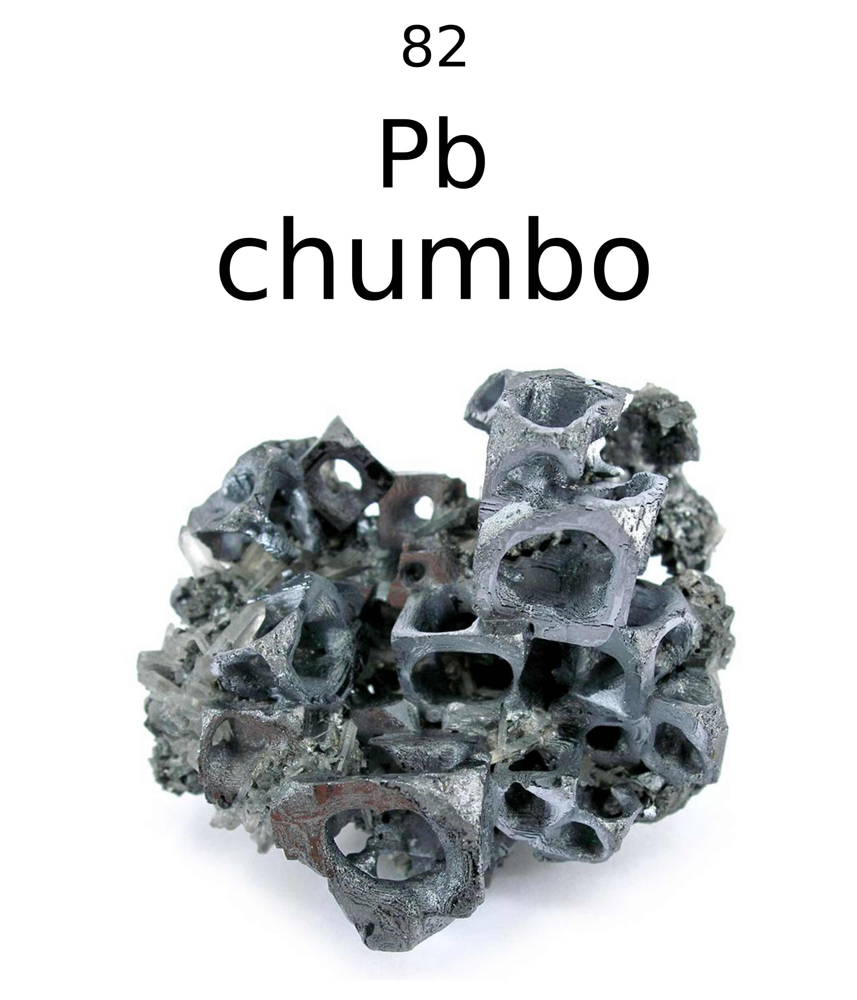
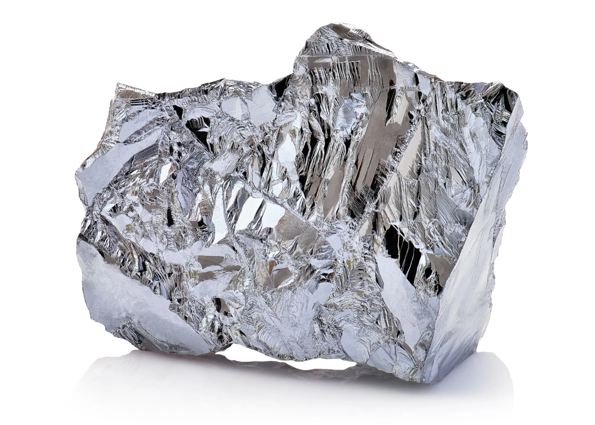
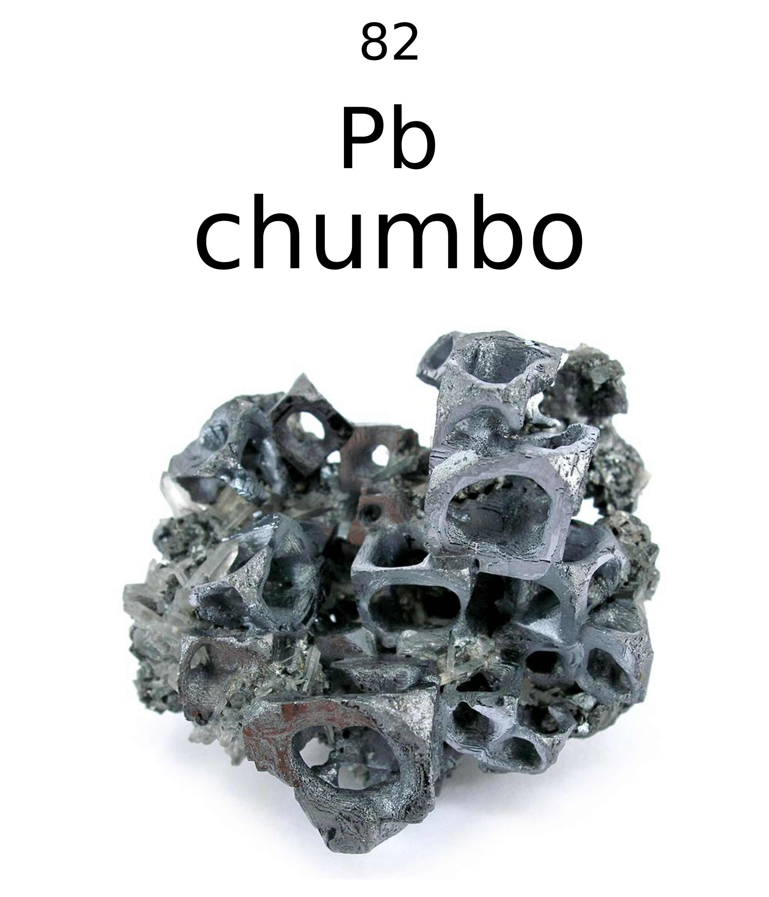
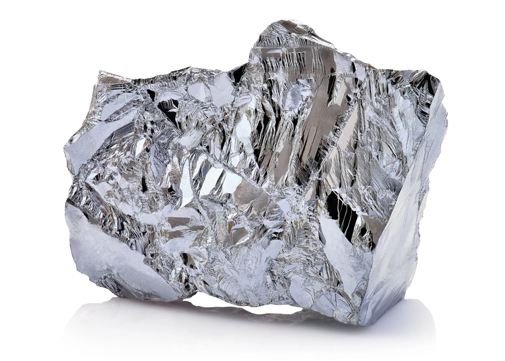

O Lixo Tecnológico
O Que é Lixo Tecnológico?
O lixo tecnológico, também conhecido como lixo eletrônico ou e-lixo, é composto por dispositivos e equipamentos eletrônicos que perderam sua utilidade. Isso pode ocorrer por diversos motivos, como obsolescência, defeitos irreparáveis ou simples substituição por modelos mais modernos. Inclui celulares, computadores, notebooks, tablets, televisores, impressoras, câmeras digitais, carregadores e cabos, entre outros.
O avanço acelerado da tecnologia encurta o ciclo de vida dos eletrônicos. Produtos lançados recentemente tornam-se rapidamente obsoletos, incentivando o consumo constante. A chamada "obsolescência programada", onde produtos são feitos para durar pouco, também acelera esse processo.
Por Que o Lixo Eletrônico Preocupa?
 



O lixo eletrônico é formado por materiais valiosos e também tóxicos. Diversos componentes contêm metais como ouro, prata, cobre e alumínio. Ao mesmo tempo, apresentam substâncias perigosas à saúde e ao meio ambiente, como chumbo, mercúrio, cádmio, níquel e compostos plásticos com aditivos.
- Chumbo: presente em soldas e monitores antigos.
- Mercúrio: comum em telas LCD e baterias.
- Cádmio: encontrado em pilhas e placas.
- Níquel e cromo: em conectores e baterias recarregáveis.
- PVC e plásticos com compostos químicos tóxicos.
Quando descartados de forma incorreta, esses elementos contaminam o solo e a água, colocando em risco ecossistemas inteiros e a saúde humana.
O Crescimento do Lixo Eletrônico no Mundo
O crescimento do lixo eletrônico no planeta é alarmante. Segundo o relatório Global E-Waste Monitor 2020, da ONU:

• Em 2019, o mundo produziu 53,6 milhões de toneladas de lixo eletrônico.
• Até 2030, a previsão é ultrapassar 74 milhões de toneladas.
• Apenas 17,4% desse total é reciclado formalmente.
• A Ásia é o continente que mais gera e-lixo, seguido pela América e Europa.
Esse aumento está diretamente ligado a três fatores principais:
• Obsolescência programada: Produtos são projetados para durar pouco.
• Obsolescência percebida: O marketing nos faz querer trocar aparelhos que ainda funcionam.
• Inovação tecnológica acelerada: Lançamentos constantes estimulam o consumo.
Muitos aparelhos eletrônicos são trocados por moda ou por status social, e não por necessidade. Isso alimenta uma cultura de consumo que desvaloriza a durabilidade e incentiva o descarte. Além disso, muitos desses componentes não são biodegradáveis e podem permanecer no ambiente por centenas de anos, criando problemas de longa duração para a sustentabilidade ambiental.
Por que falar sobre isso é Importante?
Entender o que é o lixo eletrônico e por que ele representa um problema é o primeiro passo para formar uma consciência crítica e sustentável. Mesmo sem tratar ainda de como descartar ou reaproveitar, falar sobre esse tema é importante porque:
- Estimula educação ambiental;
- Leva a sociedade a refletir sobre os limites do consumo;
- Nos faz pensar em responsabilidade social e ética tecnológica;
- Gera pressão para leis mais rigorosas e soluções mais inteligentes.
Além disso, o e-lixo se tornou uma questão estratégica: países que dominam o processamento seguro e a recuperação de materiais valiosos saem na frente em inovação e sustentabilidade.